مختبر الهياكل المتقطعة والدوائر المنطقية
إلى الدكتور محمود أحمد زاهر،
أُعدّ هذا الكتيّب بوصفه توثيقاً مطبوعاً لمشروع LOGIC LAB، انطلاقاً من رغبة صادقة في تحويل مفاهيم Discrete Structures من معادلات ساكنة إلى بيئة بصرية وحسابية تتيح للطالب أن يرى الفرضية، ويختبر كل احتمال، ويشاهد كيف يترجم المنطق المجرد إلى بوابة إلكترونية وبرهان جبري واضح.
نأمل أن يكون هذا الإصدار المطبوع تذكاراً يليق بقاعات المحاضرات والبحث العلمي، وأن يعكس بدقة الجهد الهندسي المبذول خلف كل شاشة ومعادلة داخل التطبيق.
منذ أن صاغ جورج بول قوانين الفكر في منتصف القرن التاسع عشر، تحوّلت الكلمات البشرية إلى بنية رياضية دقيقة تحكم كل معالج حاسوبي نستخدمه اليوم. ومع ذلك، ما زالت الفجوة قائمة في قاعات الدرس بين الورقة الصامتة التي تُرسم عليها الرموز، وبين الإحساس الحي بأن هذه الرموز نظام مترابط ينبض بالحياة.
في مقرر Discrete Structures، غالباً ما يواجه الطالب أربع وحدات تبدو متفرقة: صياغة الفرضيات (Propositions)، بناء جداول الصواب (Truth Tables)، اختصار Boolean Algebra، ثم رسم الدوائر (Logic Gates). وحين تُقدَّم هذه الوحدات في عروض ثابتة، يحفظ الطالب شكل الجدول دون أن يلاحظ أن العمود النهائي ليس إلا ترجمة لنفس الشجرة البنيوية ونفس التوصيلات الكهربائية.
أول سؤال يصطدم به المتعلّم عند كتابة تعبير مثل P ∧ Q ∨ R هو: أيهما يُنفَّذ أولاً؟ وفي أي صف تنقلب النتيجة إلى False؟ بدون تفاعل فوري وأعمدة وسيطة، يظل هذا التساؤل معلّقاً.
يقوم LOGIC LAB على مبدأ بسيط: لا تقم بمحاكاة الشاشات بصورة منفصلة، بل ابنِ نواة رياضية حتمية واحدة (Deterministic Core) تحسب الصواب والخطأ وتُصدّر نفس الحقيقة إلى كل أداة في المختبر. وحين تدخل التطبيق للمرة الأولى، يستقبلك مجسّم ثلاثي الأبعاد عبر Three.js WebGL يُعرف بـ «المتشعّب البولياني» تتناغم حركته مع التمرير ويضم وحدة إدخال فورية باللغتين العربية والإنجليزية.
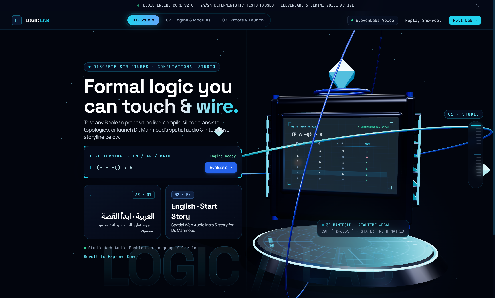
تنظيم الواجهة مستوحى من المختبرات الهندسية: شريط جانبي ثابت يضم ١٠ مساحات عمل، ومنصة وسطى متكيّفة، ودرج أيمن للمساعد الصوتي يراقب الفرضية النشطة باستمرار.
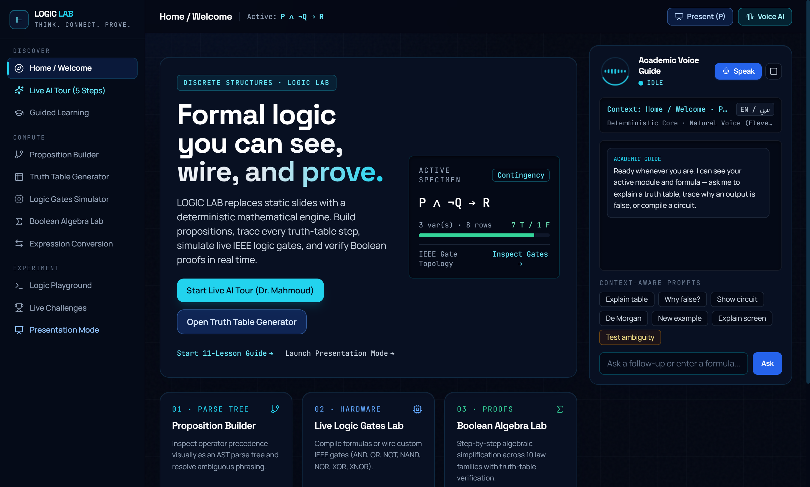
يبدأ كل برهان من فرضية أولية تأخذ قيمة True أو False، وتُركَّب من خلال متغيرات (P, Q, R, S). يقوم محلّل Recursive-Descent Parser في LOGIC LAB بتحويل الصيغة المكتوبة إلى شجرة تحليل مجردة (AST Parse Tree) تُلزم الحساب بالترتيب الرياضي الدقيق دون لبس.
| العامل | الرمز | المستوى (الأولوية) | الوظيفة المنطقية |
|---|---|---|---|
| NOT | ¬ , ~ , ! | 5 (أعلى) | عكس القيمة المنطقية (أحادي الترابط لليمين) |
| AND / NAND | ∧ , ⊼ | 4 | الوصل؛ صائب فقط عند تحقق الطرفين معاً |
| XOR | ⊕ , ^ | 3 | أو الحصرية؛ صائب عند اختلاف الطرفين فقط |
| OR / NOR | ∨ , ⊽ | 2 | الفصل الشامل؛ صائب بتحقق أحد الطرفين على الأقل |
| IMPLIES | → , -> | 1 (ليمين) | الاستلزام الشرطي؛ يكذب فقط عند T → F |
| IFF (XNOR) | ↔ , <-> | 0 (أدنى) | التكافؤ الشرطي؛ يصدق عند تطابق القيمتين |
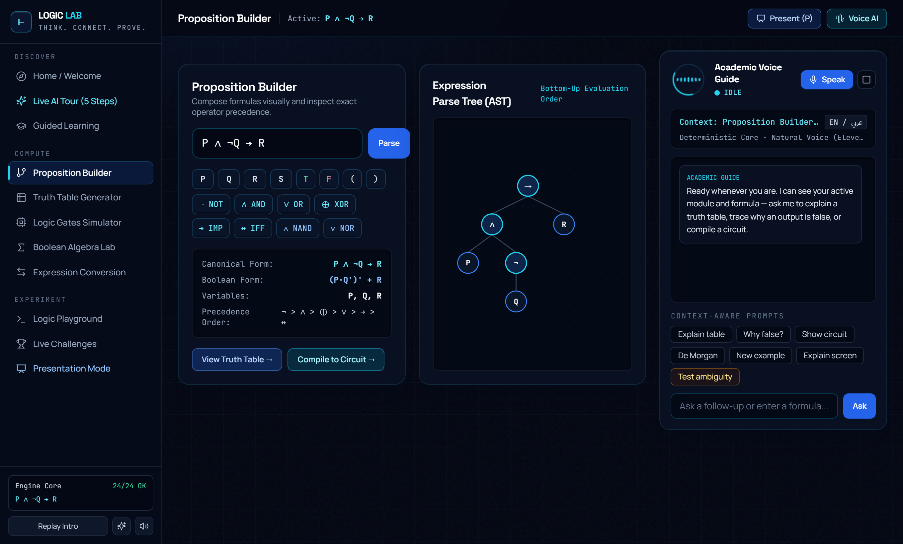
يُنشئ مولّد Truth Table جميع التوليفات الممكنة (2ⁿ صفّاً)، ولا يكتفي بالعمود الأخير بل يولّد أوتوماتيكياً أعمدة التعبيرات الوسيطة (مثل ¬Q ثم P ∧ ¬Q قبل الوصول إلى (P ∧ ¬Q) → R). وعند النقر على أي صف، يشرح التفسير المفصّل سبب كل قيمة في ذلك الصف.
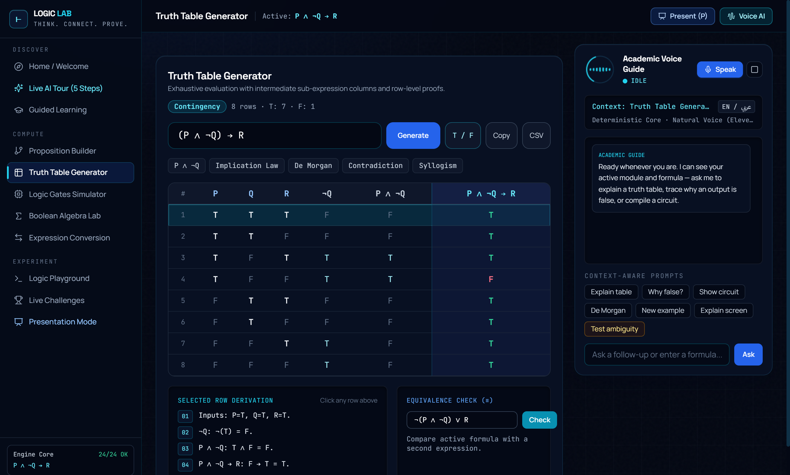
في تصميم الأنظمة الرقمية، يبدأ المهندس أحياناً من الجدول المطلوب لا من المعادلة. يتيح Expression Conversion Studio تعديل خانات المخرجات (0 ↔ 1) لمتغيرين أو ثلاثة، ليحسب فوراً كلّاً من الصيغة القياسية Canonical SOP (Σm) والصيغة القياسية Canonical POS (ΠM) مع التحقق التلقائي من تطابقهما.
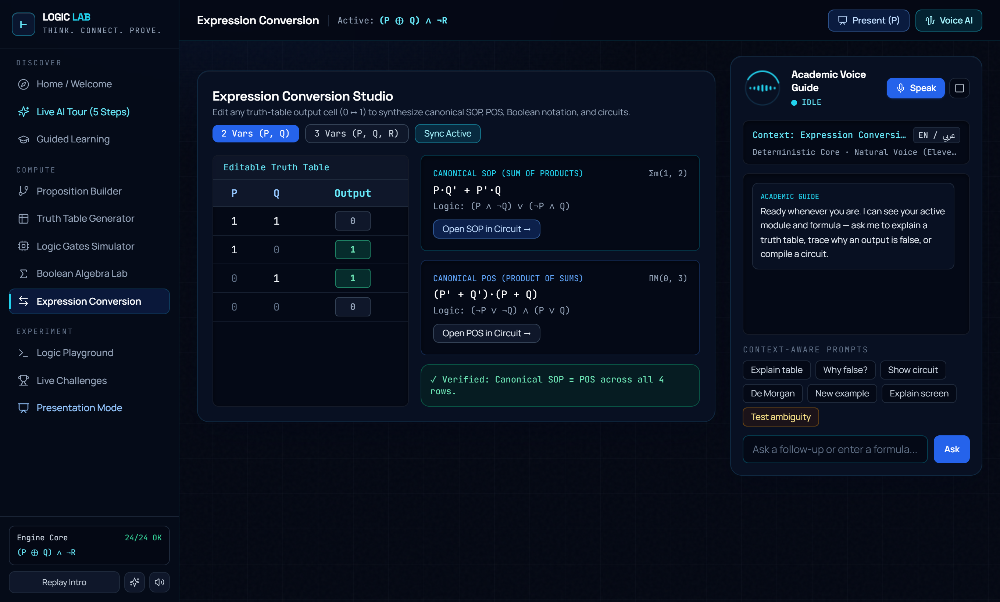
يحوّل المترجم astToCircuit شجرة المعادلة إلى رسم متجهي تفاعلي وفق رموز IEEE لسبع بوابات أساسية (AND, OR, NOT, NAND, NOR, XOR, XNOR). ويمكن للطالب النقر على مفاتيح الإدخال P, Q, R مباشرة لمشاهدة نبضات الجهد العالي (HIGH = 1) تسري عبر الأسلاك، أو بناء دائرة مخصصة وقراءة تعبيرها المنطقي العكسي.
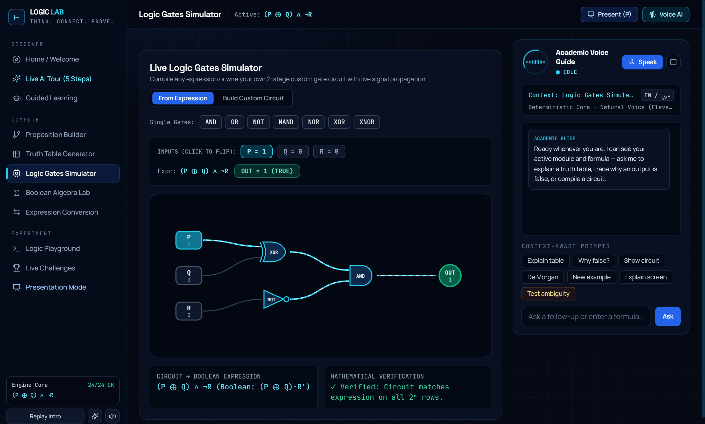
التعبير المعقد يكلّف بوابات إلكترونية أكثر. يطبّق مختبر Boolean Algebra Lab خطوات اختصار رياضية صحيحة على العبارة المدخلة مع تسمية القانون عند كل خطوة، متبوعةً بجدول صواب مقارن جنباً إلى جنب بين الصيغة الأصلية والمختصرة.
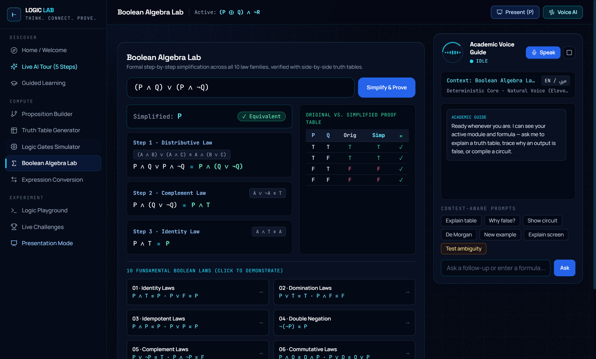
في Open Logic Playground، يقود شريط الصيغة الوحيد كلّاً من جدول الصواب والدائرة الإلكترونية والمُبسّط الجبري في وقت واحد. وبالموازاة، يوفّر التطبيق «مسرح القصة التفاعلي» المكوّن من ٦ فصول متصلة باللغتين العربية والإنجليزية.
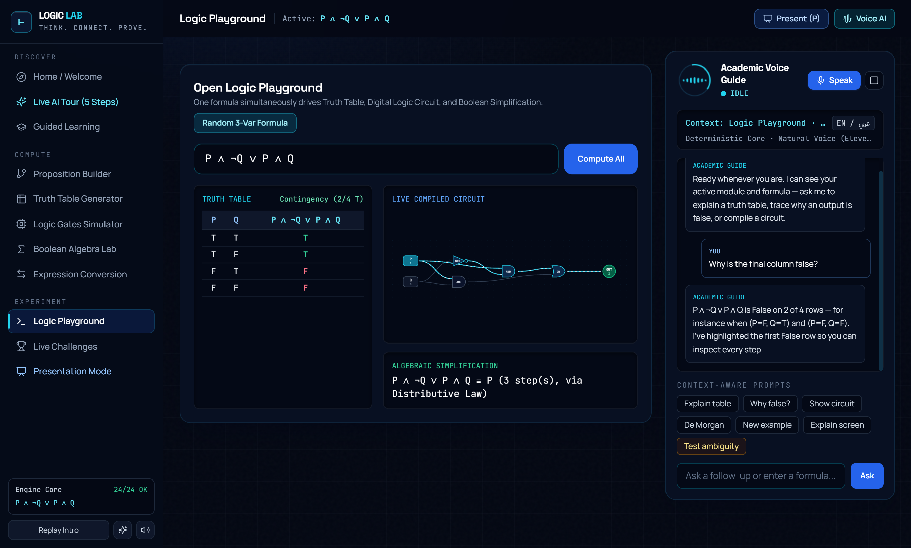
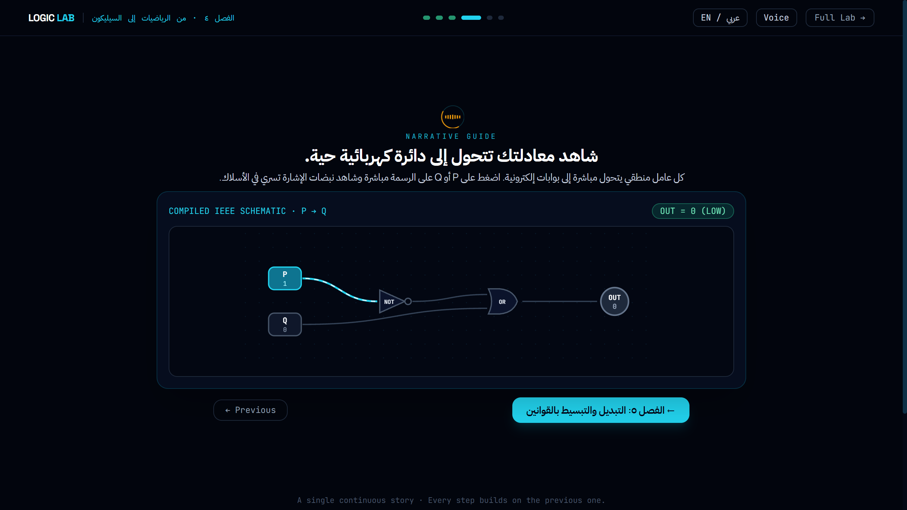
يدعم التطبيق ثلاثة مسارات تعليمية متكاملة: منهج Guided Learning المكوّن من ١١ درساً تفاعلياً مع أسئلة فورية، ووضع Live Challenges عبر ٣ مستويات (Beginner · Intermediate · Advanced) مع كشف البرهان الكامل، إضافة إلى وضع Presentation Mode المخصص للعرض داخل المدرّجات الجامعية.
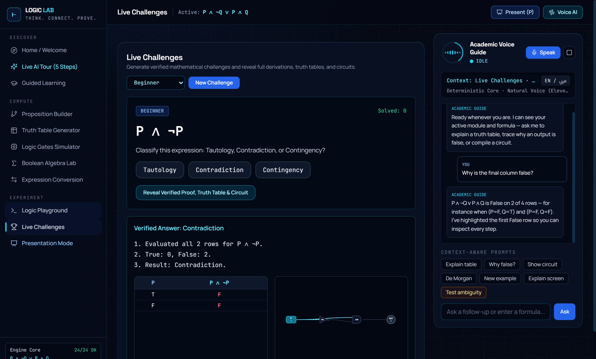
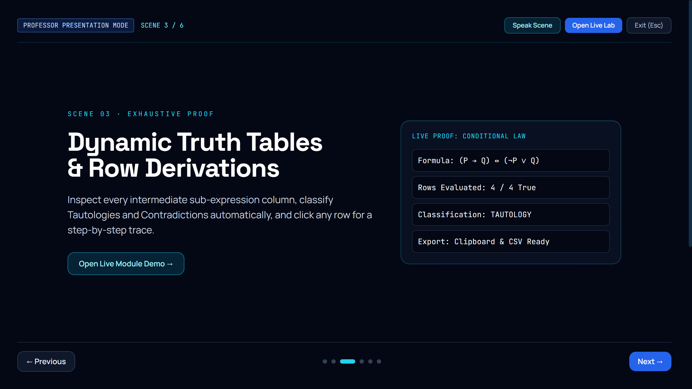
يعتمد Academic Voice Guide على قاعدة تصميمية صارمة: فهم السياق أو استنتاج الكلام الطبيعي غير المتقن يستعين بالذكاء الاصطناعي، أما التحقق الرياضي نفسه فيمرّ دائماً عبر المحرك المحلي LogicEngine دون هلوسة.
يتتبع المساعد الشاشة النشطة والمعادلة الحالية؛ فيستجيب لأسئلة مثل «لماذا العمود النهائي خطأ؟» بتحديد رقم الصف وتظليله، أو «اشرح قانون دي مورغان ببساطة»، أو رصد العبارات الغامضة مثل P and Q or R وطلب التوضيح.
يدعم النطق الطبيعي عبر ElevenLabs (eleven_multilingual_v2 للسرد العربي والإنجليزي، وeleven_flash_v2_5 للردود السريعة) مع تخزين مؤقت في IndexedDB وبديل صامت أو متصفح عند غياب الخادم.
باستخدام Web Speech API مع بدائل نطقية (maxAlternatives = 5)، يجمع المحلل بين القواعد الصوتية ونموذج Gemini Flash لتصحيح النطق المشوش مثل تحويل عبارة «B&Q or not be and not or» إلى P ∧ Q ∨ ¬P ∧ ¬R.
صُمّم LOGIC LAB للعمل فوراً بفتح ملف index.html وحده دون خطوات Build معقدة، بينما تبقى النواة الرياضية src/logicEngine.js مفصولة للاختبار المؤتمت بـ Node.js، ويعمل server/server.js كوسيط خفيف يحمي مفاتيح الصوت على الخادم.
يميز هذا الجدول بوضوح بين القدرات المختبرة محلياً وعبر الويب، وبين الخدمات السحابية التي تتطلب مفاتيح تشغيل خاصة:
| المكوّن / الخاصية | الحالة الموثّقة | التحقق الميداني |
|---|---|---|
| المحرك الرياضي وجداول 2ⁿ والـ AST | مكتمل | 24 / 24 Passed |
| محاكاة 7 بوابات وعكس الدائرة | مكتمل | DAG Equivalence ✓ |
| الاختصار الجبري (10 قوانين) وSOP/POS | مكتمل | Row-Verified ✓ |
| مستودع GitHub وواجهة الويب والكتيّب | منشور متاح | GitHub & Pages ✓ |
| صوت ElevenLabs وتحليل Gemini | يعتمد على .env | عبر server.js أو مفتاح الجلسة |
بينما يغطي LOGIC LAB v2.0 كامل أساسيات المنطق القضوي والجبر البولياني والبوابات الرقمية، تفتح معماريته المفصولة الباب أمام أربعة امتدادات أكاديمية واضحة دون المساس بنواته الحالية:
توليد تجمّعات 2, 4, 8 بصرياً انطلاقاً من مخرجات جدول الصواب لتبسيط الدوائر بمرونة أكبر.
الانتقال من Propositional Logic إلى Predicate Logic وقواعد الاستدلال الكمي.
تمكين الأستاذ والطالب من استخراج جدول الصواب أو إثبات التبسيط ككود LaTeX جاهز للأبحاث.
استضافة حاوية Docker الخادمة للوسيط server.js لتوفير الصوت الطبيعي للطلبة دون إعداد محلي.
تم تصميم وإخراج هذا الكتيّب من واقع الشفرة الفعلية للتطبيق وعبر لقطات حية التُقطت مباشرة أثناء التشغيل بدقة الطباعة، ليكون وثيقة مرجعية كاملة لملكية المشروع ومكوناته.
| الملف / المصدر في المستودع | الدور الوظيفي |
|---|---|
| index.html | الواجهة الكاملة، المشهد ثلاثي الأبعاد، الـ 10 وحدات، والقصة الصوتية |
| src/logicEngine.js | النواة الرياضية الحتمية (Parser, 2ⁿ, SOP/POS, DAG, Simplifier) |
| tests/logicEngine.test.js | حزمة الاختبارات التلقائية (24 اختباراً ناجحاً بنسبة 100%) |
| server/server.js | خادم Node.js الوسيط الآمن لتشغيل واجهة ElevenLabs الصوتية |
| LOGIC_LAB_BOOKLET_SOURCE/ | المصدر الكامل القابل للتعديل للكتيّب مع الصور والمخططات المتجهة |
«المنطق لا يُعلّمنا فقط كيف نصل إلى الإجابة الصحيحة؛ بل يعلّمنا كيف نرى الطريق كلّه، خطوةً بعد خطوة، بلا غموض.»
أُهديت هذه النسخة التوثيقية إلى الدكتور محمود أحمد زاهر تقديراً لمساحة التساؤل والتعلّم التي يفتحها علم Discrete Structures في نفوس طلابه.